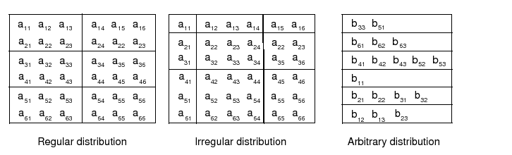
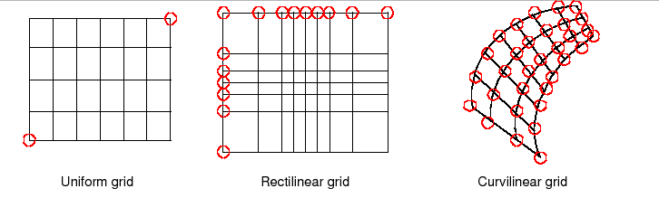
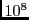

|
Key Features |
| Hierarchy of data structures designed specifically for the Earth system domain and high performance, parallel computing. |
| Multi-use ESMF structures simplify user code overall. |
| Data objects support incremental construction and deferred allocation. |
| Native Fortran arrays can be associated with or retrieved from ESMF data objects, for ease of adoption, convenience, and performance. |
An ESMF Field represents a physical field, such as temperature. The motivation for including Fields in ESMF is that bundles of Fields are the entities that are normally exchanged when coupling Components.
The ESMF Field class contains distributed, discretized field data, a reference to its associated grid, and metadata. The Field class maintains the relationship of how a data array maps onto a grid (e.g. one item per cell located at the cell center, one item per cell located at the NW corner, one item per cell vertex, ...). This means that different Fields which are on the same underlying ESMF Grid but have different staggerings can share the same Grid object without needing to replicate it multiple times.
Fields can be added to States for use in inter-Component data communications. Fields can also be added to FieldBundles, which are currently defined as groups of Fields on the same underlying grid. One motivation for FieldBundles is convenience; another is the ability to perform optimized collective data transfers.
Field communications, including data redistribution, regriding, scatter, and gather, are enabled in this release. Field halo update operation is not enabled in this release and will be enabled in subsequent releases.
ESMF does not currently support vector fields, so the components of a vector field must be stored as separate Field objects.
A Field serves as an annotator of data, since it carries a description of the grid it is associated with and metadata such as name and units. Fields can be used in this capacity alone, as convenient, descriptive containers into which arrays can be placed and retrieved. However, for most codes the primary use of Fields is in the context of import and export States, which are the objects that carry coupling information between Components. Fields enable data to be self-describing, and a State holding ESMF Fields contains data in a standard format that can be queried and manipulated.
The sections below go into more detail about Field usage.
Fields can be created and destroyed at any time during application execution. However, these Field methods require some time to complete. We do not recommend that the user create or destroy Fields inside performance-critical computational loops.
All versions of the ESMF_FieldCreate() routines require a Grid object as input, or require a Grid be added before most operations involving Fields can be performed. The Grid contains the information needed to know which Decomposition Elements (DEs) are participating in the processing of this Field, and which subsets of the data are local to a particular DE.
The details of how the create process happens depends on which of the variants of the ESMF_FieldCreate() call is used. Some of the variants are discussed below.
There are versions of the ESMF_FieldCreate() interface which create the Field based on the input Grid. The ESMF can allocate the proper amount of space but not assign initial values. The user code can then get the pointer to the uninitialized buffer and set the initial data values.
Other versions of the ESMF_FieldCreate() interface allow user code to attach arrays that have already been allocated by the user. Empty Fields can also be created in which case the data can be added at some later time.
For versions of Create which do not specify data values, user code can create an ArraySpec object, which contains information about the typekind and rank of the data values in the array. Then at Field create time, the appropriate amount of memory is allocated to contain the data which is local to each DE.
When finished with a ESMF_Field, the ESMF_FieldDestroy method removes it. However, the objects inside the ESMF_Field created externally should be destroyed separately, since objects can be added to more than one ESMF_Field. For example, the same ESMF_Grid can be referenced by multiple ESMF_Fields. In this case the internal Grid is not deleted by the ESMF_FieldDestroy call.
The code in this file defines the public C Field class and declares method signatures (prototypes). The companion file ESMC_Field.C contains the definitions (full code bodies) for the Field methods.
The Array class is an alternative to the Field class for representing distributed, structured data. Unlike Fields, which are built to carry grid coordinate information, Arrays can only carry information about the indices associated with grid cells. Since they do not have coordinate information, Arrays cannot be used to calculate interpolation weights. However, if the user can supply interpolation weights (using a package such as SCRIP), the Array sparse matrix multiply operation can be used to apply the weights and transfer data to the new grid. Arrays can also perform redistribution, scatter, and gather operations.
Like Fields, Arrays can be added to a State and used in inter-component data communications. Arrays can also be grouped together into ArrayBundles so that collective operations can be performed on the whole group. One motivation for this is convenience; another is the ability to schedule optimized, collective data transfers.
From a technical standpoint, the ESMF_Array class is an index space based, distributed data storage class. It provides DE-local memory allocations within DE-centric index regions and defines the relationship to the index space described by DistGrid. The Array class offers common communication patterns within the index space formalism. As part of the ESMF index space layer Array has close relationship to the DistGrid and DELayout classes.
The code in this file defines the public C Array class and declares method signatures (prototypes). The companion file ESMC_Array.C contains the definitions (full code bodies) for the Array methods.
An ArraySpec is a very simple class that contains type, kind, and rank information about an array. This information is stored in two parameters. TypeKind describes the data type of the elements in the array and their precision. Rank is the number of dimensions in the array.
The only methods that are associated with the ArraySpec class are those that allow you to set and retrieve this information.
The code in this file defines the public C ArraySpec interfaces and declares method signatures (prototypes). The companion file ESMC_ArraySpec.C contains the definitions (full code bodies) for the ArraySpec methods.
The ESMF Grid class is used to describe the geometry and discretization of logically rectangular physical grids. It also contains the description of the grid's underlying topology and the decomposition of the physical grid across the available computational resources. The most frequent use of the Grid class is to describe physical grids in user code so that sufficient information is available to perform ESMF methods such as regridding.
In the current release (v3.1.0) the functionality in this class is partially implemented. Multi-tile grids are not supported, and edge connectivities are not implemented and default to aperiodic. Other constraints of the current implementation are noted in the usage section and in the API descriptions.
|
Key Features |
| Representation of grids formed by logically rectangular regions, including uniform and rectilinear grids (e.g. lat-lon grids), curvilinear grids (e.g. displaced pole grids), and grids formed by connected logically rectangular regions (e.g. cubed sphere grids) [CONNECTED REGIONS ARE NOT YET SUPPORTED]. |
| Support for 1D, 2D, 3D, and higher dimension grids. |
| Distribution of grids across computational resources for parallel operations - users set which grid dimensions are distributed. |
| Grids can be created already distributed, so that no single resource needs global information during the creation process. |
| Options to define periodicity and other edge connectivities either explicitly or implicitly via shape shortcuts [EDGE CONNECTIVITIES CURRENTLY DEFAULT TO APERIODIC BOUNDS]. |
| Options for users to define grid coordinates themselves or call prefabricated coordinate generation routines for standard grids [NO GENERATION ROUTINES YET]. |
| Options for incremental construction of grids. |
| Options for using a set of pre-defined stagger locations or for setting custom stagger locations. |
ESMF Grids are based on the concepts described in A Standard Description of Grids Used in Earth System Models [Balaji 2006]. In this document Balaji introduces the mosaic concept as a means of describing a wide variety of Earth system model grids. A mosaic is composed of grid tiles connected at their edges. Mosaic grids includes simple, single tile grids as a special case.
The ESMF Grid class is a representation of a mosaic grid. Each ESMF Grid is constructed of one or more logically rectangular Tiles. A Tile will usually have some physical significance (e.g. the region of the world covered by one face of a cubed sphere grid).
The piece of a Tile that resides on one DE (for simple cases, a DE can be thought of as a processor - see section on the DELayout) is called a LocalTile. For example, the six faces of a cubed sphere grid are each Tiles, and each Tile can be divided into many LocalTiles.
Every ESMF Grid contains a DistGrid object, which defines the Grid's index space, topology, distribution, and connectivities. It enables the user to define the complex edge relationships of tripole and other grids. The DistGrid can be created explicitly and passed into a Grid creation routine, or it can be created implicitly if the user takes a Grid creation shortcut. Options for grid creation are described in more detail in section 12.1.8. The DistGrid used in Grid creation describes the properties of the Grid cells. In addition to this one, the Grid internally creates DistGrids for each stagger location. These stagger DistGrids are related to the original DistGrid, but may contain extra padding to represent the extent of the index space of the stagger. These DistGrids are what are used when a Field is created on a Grid.
The range of supported grids in ESMF can be defined by:
![[*]](crossref.png) . Connectivities
are specified using the ESMF_GridConn parameter, which has values
such as ESMF_GRIDCONN_PERIODIC.
. Connectivities
are specified using the ESMF_GridConn parameter, which has values
such as ESMF_GRIDCONN_PERIODIC.
The table below shows the ESMF_GridConn settings used to create standard shapes in 2D using the ESMF_GridCreateShapeTile() call. Two values are specified for each dimension, one for the low end and one for the high end of the dimension's index values. Note that connectivities have not been implemented as of v4.0.0 and default to aperiodic bounds.
| 2D Shape | connDim1(1) | connDim1(2) | connDim2(1) | connDim2(2) |
| Rectangle | NONE | NONE | NONE | NONE |
| Bipole Sphere | POLE | POLE | PERIODIC | PERIODIC |
| Tripole Sphere | POLE | BIPOLE | PERIODIC | PERIODIC |
| Cylinder | NONE | NONE | PERIODIC | PERIODIC |
| Torus | PERIODIC | PERIODIC | PERIODIC | PERIODIC |
If the user's grid shape is too complex for an ESMF shortcut routine, or involves more than three dimensions, a DistGrid can be created to specify the shape in detail. This DistGrid is then passed into a Grid create call.
ESMF Grids have several options for data distribution (also referred to as decomposition). As ESMF Grids are cell based, these options are all specified in terms of how the cells in the Grid are broken up between DEs.
The main distribution options are regular, irregular, and arbitrary.
A regular distribution is one in which the same number of
contiguous grid cells are assigned to each DE in the
distributed dimension. A irregular distribution is one in which
unequal numbers of contiguous grid cells are assigned to each
DE in the distributed dimension. An arbitrary distribution is
one in which any grid cell can be assigned to any DE. Any of these
distribution options can be applied to any of the grid shapes (i.e.,
rectangle) or types (i.e., rectilinear). Support for arbitrary distribution
is limited in v4.0.0, See section for
more detail descriptions.
Figure 7 illustrates options for distribution.
|  |
A distribution can also be specified using the DistGrid, by passing object into a Grid create call.
Any of these logically rectangular grid types can be combined through edge connections to form a mosaic. Cubed sphere and yin-yang grids are examples of mosaic grids. Note that as of v4.0.0 multi-tile grids have not yet been implemented.
|  |
Each of these coordinate types can be set for each of the standard grid shapes described in section 12.1.3.
The table below shows how examples of common single Tile grids fall into this shape and coordinate taxonomy. Note that any of the grids in the table can have a regular or arbitrary distribution.
| Uniform | Rectilinear | Curvilinear | |
| Sphere | Global uniform lat-lon grid | Gaussian grid | Displaced pole grid |
| Rectangle | Regional uniform lat-lon grid | Gaussian grid section | Polar stereographic grid section |
There are two ways of specifying coordinates in ESMF. The first way is for the user to set the coordinates. The second way is to take a shortcut and have the framework generate the coordinates.
No ESMF generation routines are currently available.
See Section for more description and examples of
setting coordinates.
Staggering is a finite difference technique in which the values of different physical quantities are placed at different locations within a grid cell.
The ESMF Grid class supports a variety of stagger locations, including cell centers, corners, and edge centers. The default stagger location in ESMF is the cell center, and cell counts in Grid are based on this assumption. Combinations of the 2D ESMF stagger locations are sufficient to specify any of the Arakawa staggers. ESMF also supports staggering in 3D and higher dimensions. There are shortcuts for standard staggers, and interfaces through which users can create custom staggers.
As a default the ESMF Grid class provides symmetric staggering, so that cell centers are enclosed by cell perimeter (e.g. corner) stagger locations. This means the coordinate arrays for stagger locations other than the center will have an additional element of padding in order to enclose the cell center locations. However, to achieve other types of staggering, the user may alter or eliminate this padding by using the appropriate options when adding coordinates to a Grid.
In v4.0.0, only the cell center stagger location is supported for an
arbitrarily distributed grid. For examples and a full description of the stagger interface
see Section .
ESMF Grid objects must represent a wide range of grid types and use cases, some of them quite complex. As a result, multiple ways to build Grid objects are required. This section describes the stages to building Grids, the options for each stage, and typical calling sequences.
In ESMF there are two main stages to building Grids. The
ESMF_GridStatus value stored within the Grid object reflects
the stage the Grid has attained (see Section ).
These stages are:
The options for specifying the Grid shape are:
When creating the Grid shape and specifying the Grid coordinates, the user can either specify all required information at once, or can provide information incrementally. The call ESMF_GridCreateEmpty() builds a Grid object container that can be filled in with a subsequent call to the ESMF_GridSetCommitShapeTile() method. The ESMF_GridSetCommitShapeTile() creates the grid and sets the appropriate flag to indicate that its usable (the status equals ESMF_GRIDSTATUS_SHAPE_READY after the commit). The Grid is implicitly in a valid state after being committed.
For consistency's sake the ESMF_GridSetCommitShapeTile() call must occur on the same or a subset of the PETs as the ESMF_GridCreateEmpty() call. The ESMF_GridSetCommitShapeTile() call uses the VM for the context in which it's executed and the "empty" Grid contains no information about the VM in which it was run. If the ESMF_GridSetCommitShapeTile() call occurs in a subset of the PETs in which the ESMF_GridCreateEmpty() was executed, the Grid is created only in that subset. The grid objects outside the subset will still be "empty" and not usable.
The following table summarizes possible call sequences for building Grids.
| Create Shape |
| From shape shortcut |
| grid = ESMF_GridCreateShapeTile(...) |
| Using DistGrid with general create interface |
| distgrid = ESMF_DistGridCreate(...) |
| grid = ESMF_GridCreate(distgrid, ...) |
| Incremental |
| grid = ESMF_GridCreateEmpty(...) |
| call ESMF_GridSetCommitShapeTile(grid, ...) |
| Set Coordinates |
| Set coordinates by copy or reference |
| call ESMF_GridSetCoord(grid, ...) |
| Retrieve ESMF Array of coordinates from Grid and set values |
| call ESMF_GridGetCoord(grid, esmfArray, ...), set values |
| Retrieve local bounds and native array from Grid and set values |
| call ESMF_GridGetCoord(grid, lbound, ubound, array), set values |
The code in this file defines the C public Grid class and declares method signatures (prototypes). The companion file ESMC_Grid.C contains the definitions (full code bodies) for the Grid methods.
---------------------------------------
USES:
#include "ESMCI_Grid.h"
extern "C" {
class declaration type
typedef struct {
ESMCI::Grid *grid;
A location stream (LocStream) is used to represent the locations of a set of data points. The values of the data points are stored within a Field or FieldBundle created using the LocStream.
In the data assimilation world, LocStreams can be thought of as a set of observations. Their locations are generally described using Cartesian (x, y, z), or (lat, lon, height) coordinates. There is no assumption of any regularity in the positions of the points. To make the concept more general, the locations for each data point are represented using a construct called Keys, which can include other descriptors besides location.
Although Keys are similar in concept to ESMF Attributes they have important differences. First, Keys always occur as vectors, never as scalars. Second, Keys are local to the DE: each DE can have a different Key list with a different number of of elements. Third, the local Key list always has the same number of elements as there are local observations on that DE. Finally, Keys may be used for the distribution of LocStreams. As such, they must be defined before the LocStream is distributed.
LocStreams can be very large. Data assimilation systems might use LocStreams with up to  observations, so efficiency is critical.
Common operations involving LocStreams are similar to those involving Grids. In data assimilation, for example, there is an immediate need to:
The operations on the Fortran arrays underlyinng LocStreams are usually simple numerical ones. However, it is necessary to sort them in place, and access only portions of the them. It would not be efficient to continually create new LocStreams to reflect this sorting. Instead, the sorting is managed by the application through permutation arrays while keeping the data in place. Locations can become inactive, e.g., if the quality control asserts that observation is invalid. This can be managed again by the application through masks.
Unstructured grids are commonly used in the computational solution of Partial Differential equations. These are especially useful for problems that involve complex geometry, where using the less flexible structured grids can result in grid representation of regions where no computation is needed. Finite element and finite volume methods map naturally to unstructured grids and are used commonly in hydrology, ocean modeling, and many other applications.
In order to provide support for application codes using unstructured grids, the ESMF library provides a class for representing unstructured grids called the Mesh. Fields can be created on a Mesh to hold data. Fields created on a Mesh can also be used as either the source or destination or both of an interpolaton (i.e. an ESMF_FieldRegridStore() call) in ESMF allowing data to be moved to or from or between unstructured grids. This section describes the Mesh and how to create and use them in ESMF.
A Mesh in ESMF is described in terms of nodes and elements. A node is a point in space which represents where the coordinate information in a Mesh is located. This is also where Field data may be located in a Mesh (i.e. Fields may be created on a Mesh's nodes). An element is a higher dimensional shape constructed of nodes. Elements give a Mesh its shape and define the relationship of the nodes to one another.
The range of Meshes supported by ESMF are defined by several factors: dimension, element types, and distribution.
ESMF currently only supports Meshes whose number of coordinate dimensions (spatial dimension) is 2 or 3. The dimension of the elements in a Mesh (parametric dimension) must be less than or equal to the spatial dimension, but also must be either 2 or 3. This means that an ESMF mesh may be either 2D elements in 2D space, 3D elements in 3D space, or a manifold constructed of 2D elements embedded in 3D space.
ESMF currently supports two types of elements for each Mesh parametric dimension. For a parametric dimension of 2 the
supported element types are triangles or quadralaterals. For a parametric dimension of 3 the supported element types are tetrahedrons
and hexahedrons. See Section for diagrams of these. The Mesh supports any combination of element types within a particular
dimension, but types from different dimensions may not be mixed, for example, a Mesh cannot be constructed of both quadralaterals and tetrahedra.
ESMF currently only supports distributions where every node on a PET must be a part of an element on that PET. In other words, there must not be nodes without an element on a PET.
The ESMF_DistGrid class sits on top of the DELayout class and holds domain information in index space. A DistGrid object captures the index space topology and describes its decomposition in terms of DEs. Combined with DELayout and VM the DistGrid defines the data distribution of a domain decomposition across the computational resources of an ESMF component.
The global domain is defined as the union or ``patchwork'' of logically rectangular (LR) sub-domains or patches. The DistGrid create methods allow the specification of such a patchwork global domain and its decomposition into exclusive, DE-local LR regions according to various degrees of user specified constraints. Complex index space topologies can be constructed by specifying connection relationships between patches during creation.
The DistGrid class holds domain information for all DEs. Each DE is associated with a local LR region. No overlap of the regions is allowed. The DistGrid offers query methods that allow DE-local topology information to be extracted, e.g. for the construction of halos by higher classes.
A DistGrid object only contains decomposable dimensions. The minimum rank for a DistGrid object is 1. A maximum rank does not exist for DistGrid objects, however, ranks greater than 7 may lead to difficulties with respect to the Fortran API of higher classes based on DistGrid. The rank of a DELayout object contained within a DistGrid object must be equal to the DistGrid rank. Higher class objects that use the DistGrid, such as an Array object, may be of different rank than the associated DistGrid object. The higher class object will hold the mapping information between its dimensions and the DistGrid dimensions.
The code in this file defines the public C DistGrid class and declares method signatures (prototypes). The companion file ESMC_DistGrid.C contains the definitions (full code bodies) for the DistGrid methods.